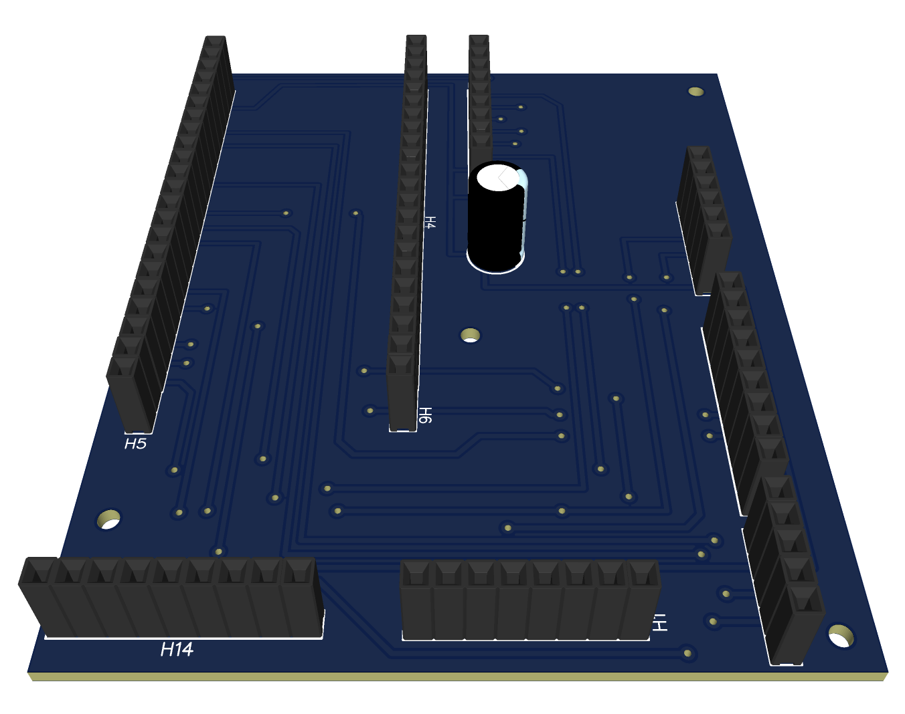
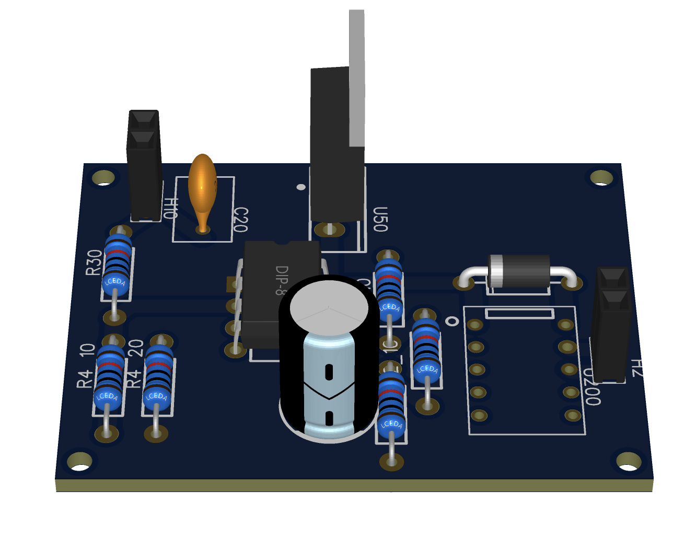

Electrical Engineering Student / Senior Year
Integrated circuits and semiconductor systems.
Working toward transistor and chip-level design.
Selected Work
Projects.

PCB Design
Cansat Flight Computer PCB
Plug-and-play flight computer board for a can-sized satellite system.
Open project
PCB Design
Low Voltage Disconnect PCB
Battery protection board designed to cut off voltage below a threshold.
Open project
VLSI / Layout
MIPS8 Processor
Transistor-level schematic and layout for a MIPS8 instruction processor.
Open project
ASIC
Similarity Detector
Combinational logic ASIC comparing two 8-bit inputs against a threshold.
Open projectMe
Simple, focused, chip-level.
Electrical Engineering student focused on Integrated Circuit Design, VLSI, and semiconductor systems. Working toward transistor and chip-level design.
Expertise
Core focus.
VLSI & Chip Design
Integrated circuits, transistor-level design, layout, and verification.
PCB Development
Practical boards built around debugging, reliability, and fast iteration.
Semiconductor Systems
Semiconductor-aware thinking from logic behavior down to layout details.
Contact